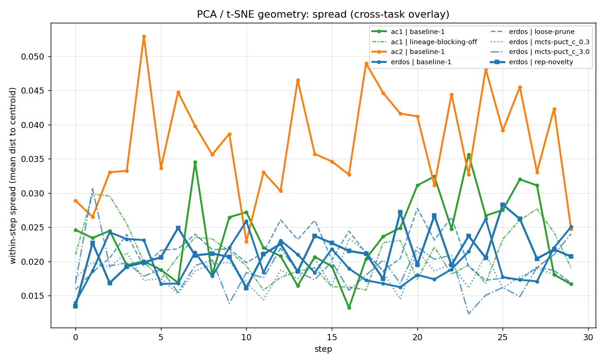
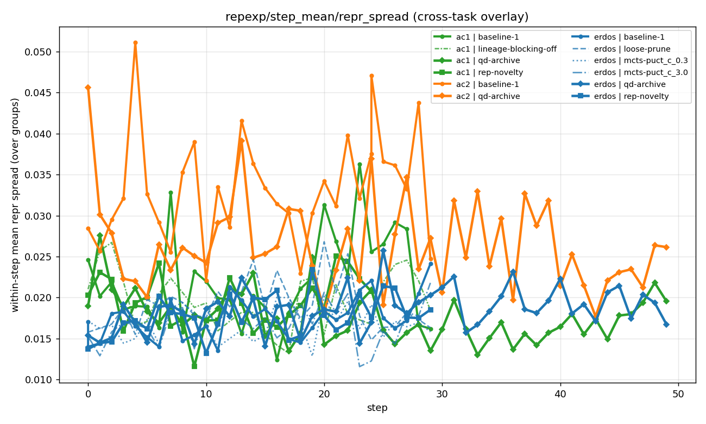
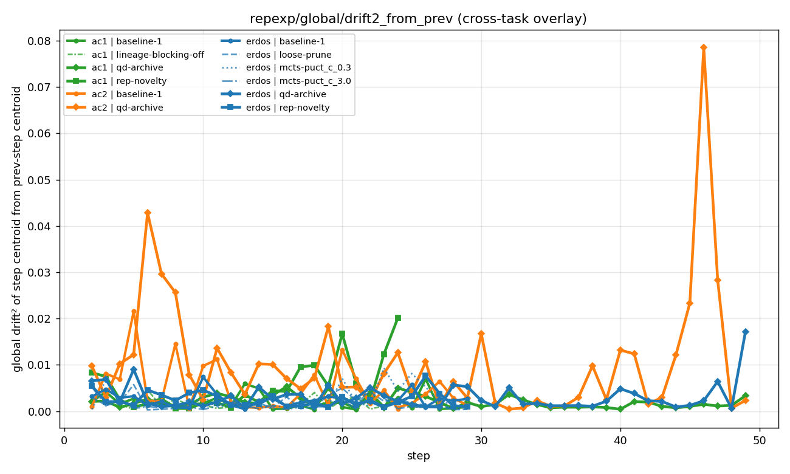
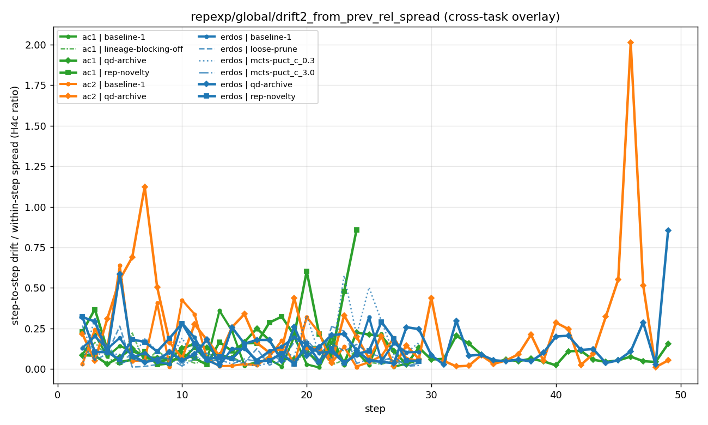
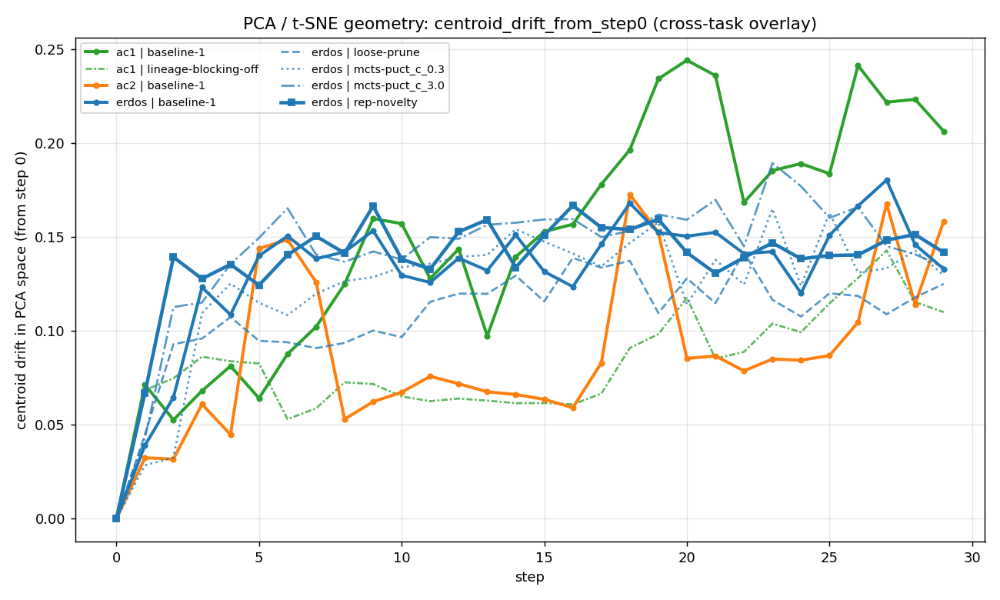

H4 EXPERIMENT
H4 — Local vs global exploration
THE key finding. The policy keeps producing diverse rollouts per step, but stops moving the center of those rollouts in representation space. Four sub-findings (H4a–d) all point the same way.
H4a — Within-step rollout diversity stays HIGH
Mean pairwise cosine similarity of rollouts within a single step ≈ 0.85 over all 30 steps. Per-step the policy generates spread-out rollouts on every task.


H4b — Cross-step novelty COLLAPSES
Step-to-step centroid drift starts at ~0.04 and falls to ~0.004 by step 29 — 10× drop.

H4c — Cross-step / within-step ratio drops to ~1
Early training: cross-step movement is ~10× the within-step rollout spread. Late training: cross-step movement = within-step noise. The centroid effectively stops moving relative to per-step noise.

H4d — Global centroid drift plateaus by step ~10

What it means
The policy explores locally around a committed center, not globally across rep space. It keeps making diverse rollouts in the same neighborhood forever. This is the diagnosis that motivates every method we built — both rep-novelty (push toward globally-novel reps) and QD-archive (force coverage across behavior cells).